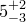

The following pair of plot styles allow datapoints to be plotted with errorbars indicating the uncertainties in either their vertical or horizontal positions:
Both of these plot styles take three (or four) columns of input data on 2D (or 3D) plots, the first two (or three) of which represent the  -,
-,  - (and
- (and  -)coordinates of the central position of each errorbar, and the last of which represents the uncertainty in either the - and -coordinate. The plot style errorbars is an alias for yerrorbars. Additionally, the following plot style allows datapoints to be plotted with both horizontal and vertical errorbars:
-)coordinates of the central position of each errorbar, and the last of which represents the uncertainty in either the - and -coordinate. The plot style errorbars is an alias for yerrorbars. Additionally, the following plot style allows datapoints to be plotted with both horizontal and vertical errorbars:
This plot style takes four (or five) columns of data as input, the first two (or three) of which represent the -, - (and -)coordinates of the central position of each errorbar, the last but one of which gives the uncertainty in the -coordinate, and the last of which gives the uncertainty in the -coordinate.
Each of the plot styles listed above has a corresponding partner which takes minimum and maximum limits for each errorbar, equivalent to writing , in place of a single symmetric uncertainty:
The plot style errorrange is an alias of yerrorrange.
Corresponding plot styles also exist to plot data with errorbars along the -axes of three-dimensional plots: zerrorbars, zerrorrange, xzerrorbars, xzerrorrange, yzerrorbars, yzerrorrange, xyzerrorbars, xyzerrorrange. Though it does not make sense to use these on two-dimensional plots, it is not an error to do so; they expect the same number of columns of input data on both two- and three-dimensional plots.